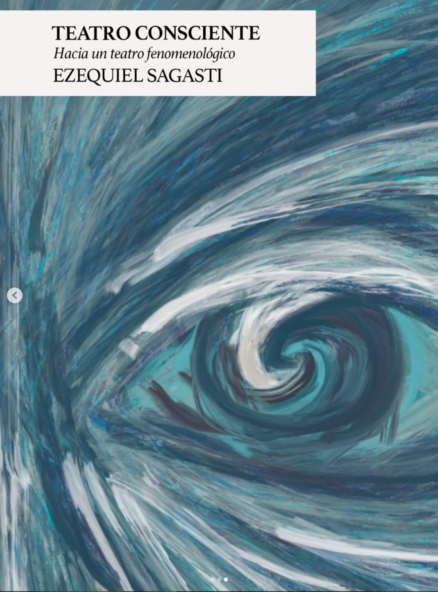

libro
Teatro consciente
hacia un teatro fenomenológico

Durante siglos, el teatro partió de una misma premisa: actuar es representar. Este libro comienza donde ese paradigma se agota: la escena ya no pide actuar desde lo que nos sucede dentro, sino abrirse a lo que pasa afuera y ser el resultado de afectarse por ello.
Sagasti reúne su experiencia filosófica y escénica para proponer otra manera de actuar: un teatro donde el sentido no se fuerza ni se fabrica de antemano, sino que aparece en el momento. Aquí presenta la vía de las imágenes resonantes, un enfoque que reemplaza la psicología interna por el encuentro con imágenes externas que orientan el conflicto, el deseo y la presencia.
Un teatro que no representa: acontece.